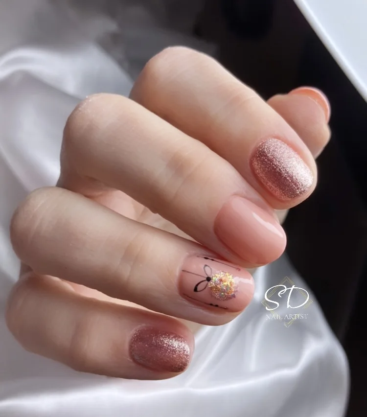
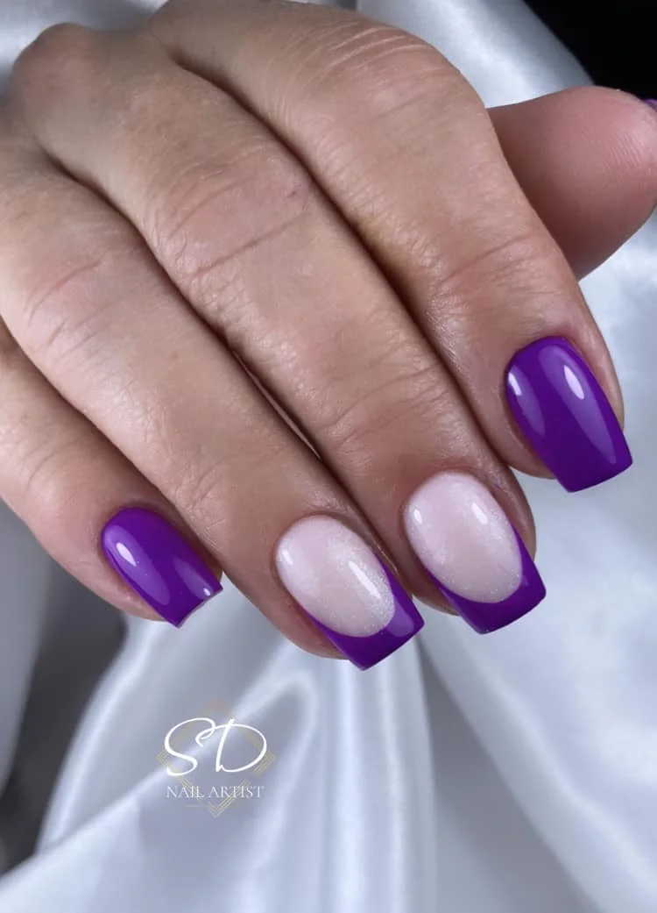
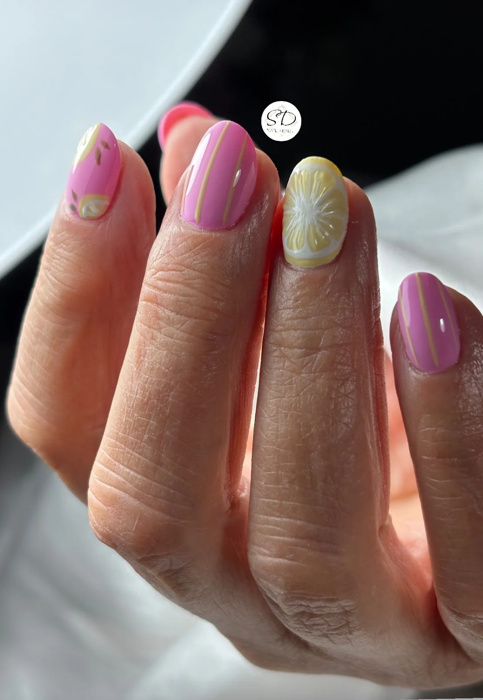
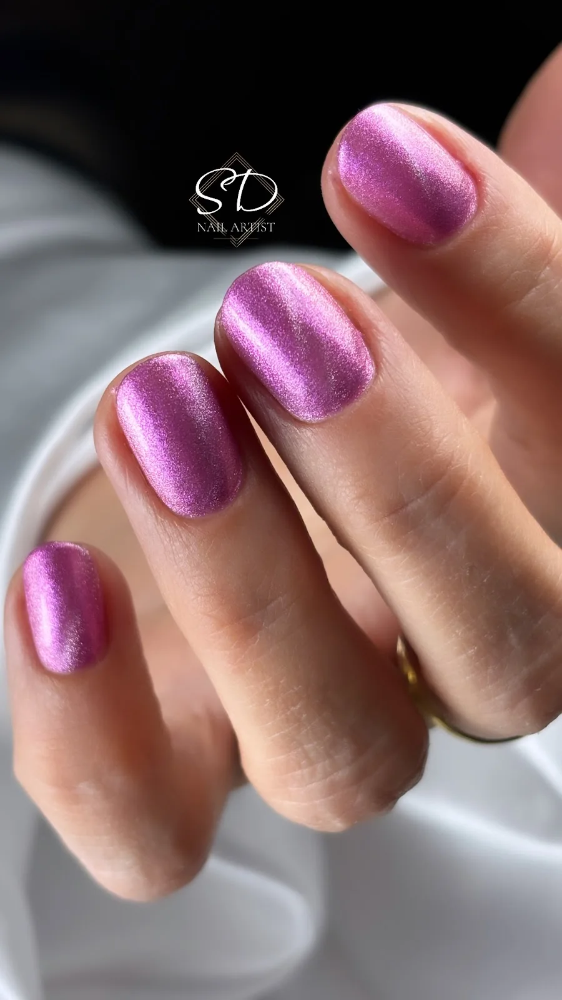
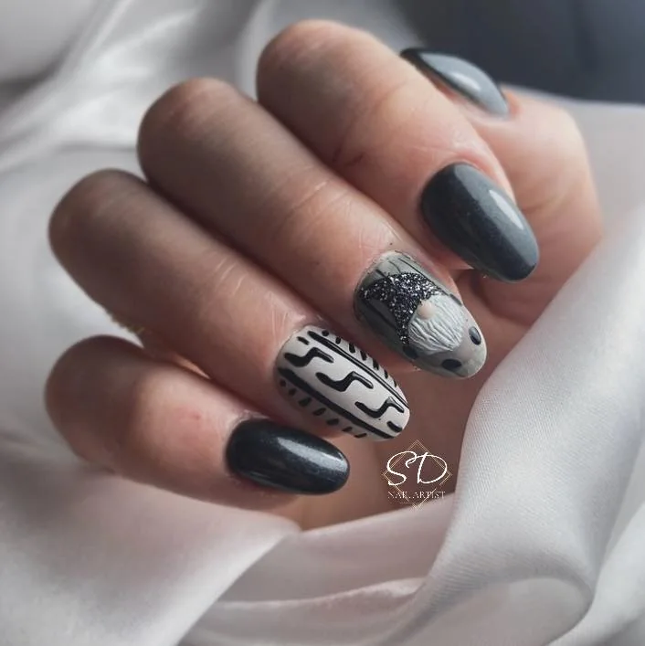
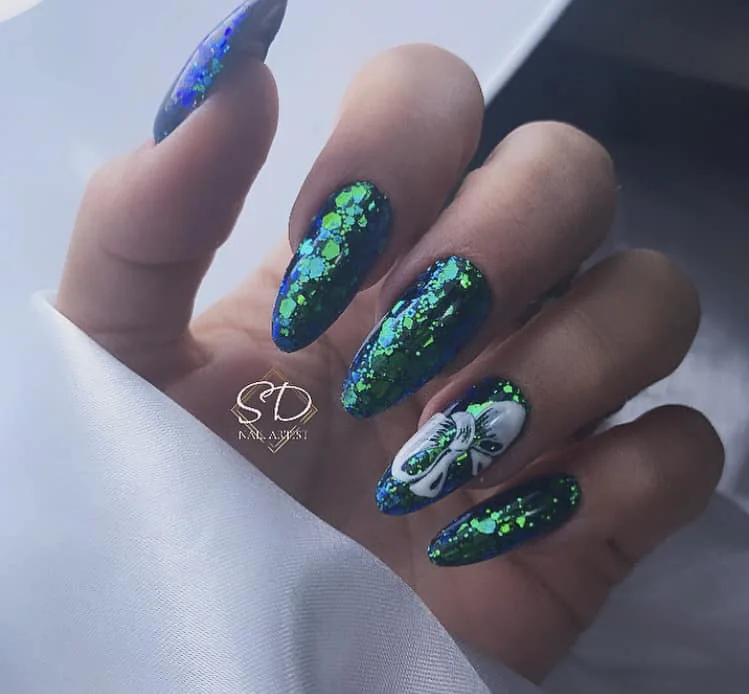
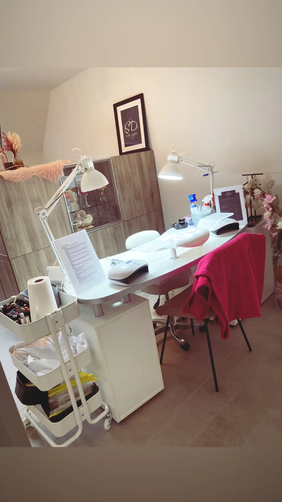

"Sophie is een echte kunstenares. Heel mooie ontwerpen. Krijgt van mij altijd carte blanche. En ik ga altijd heel gelukkig naar huis. De verzorging is echt top ! Ze zorgt echt voor mooie, verzorgde nagels."
Ontwerpen
Elke set, met de hand.
Lijntjes, bloemen en patronen tekent Sophie zelf. Een greep uit haar werk, recht van haar tafel.






Bij Sophie
Mooie nagels en een fijne babbel.
Met de hand
Bloemen, lijntjes en patronen tekent ze zelf, tot in het kleinste detail.
"de beste in het maken van tekeningen met de hand"
Een eigen vijl
Hygiëne gaat voor: elke klant krijgt haar eigen vijl.
"gebruikt voor elke klant een aparte vijl"
Eerlijk advies
Twijfel je over vorm of kleur? Ze zegt je eerlijk wat mooi wordt.
"altijd haar eerlijke mening"
Carte blanche
Geen idee? Laat Sophie kiezen. Vaste klanten doen niet anders.
"Krijgt van mij altijd carte blanche."
Reviews
5,0★★★★★15 reviews op Google
Een echte verwentijd.
"Sophie is een professionele nagelstyliste en doet haar job met veel toewijding en passie ❤️. Jij vraagt, zij maakt er iets moois van. Ze geeft ook altijd haar eerlijke mening als je haar iets vraagt qua nagels/nailart."
"Sophie doet mijn nagels steeds met heel veel zorg en precisie. Ze luistert altijd naar je wensen en zal alles uit de kast halen om je te geven wat je wil."

Haar nageltafel
Afspraak
Tijd voor nieuwe nagels?
Stuur Sophie een berichtje of bel even. Zeg welke kleur of welk idee je in gedachten hebt, dan plant ze je in.
Dinsdag15u10 tot 18u45
Donderdag15u10 tot 18u45
Vrijdag15u10 tot 18u
Zaterdag10u tot 13u
Maandag, woensdag en zondag gesloten.
Botermelkstraat 2A
9400 NinoveRoute plannen
9400 NinoveRoute plannen